Changes in PRIMAP-hist v2.5.1_final compared to v2.5_final for Uzbekistan
2024-02-29
Johannes Gütschow
Change analysis for Uzbekistan for PRIMAP-hist v2.5.1_final compared to v2.5_final
Overview over emissions by sector and gas
The following figures show the aggregate national total emissions excluding LULUCF AR6GWP100 for the country reported priority scenario. The dotted linesshow the v2.5_final data.

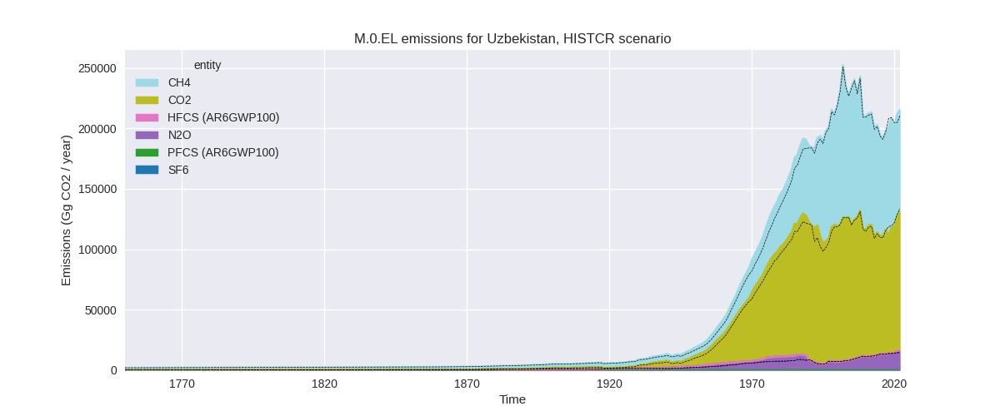
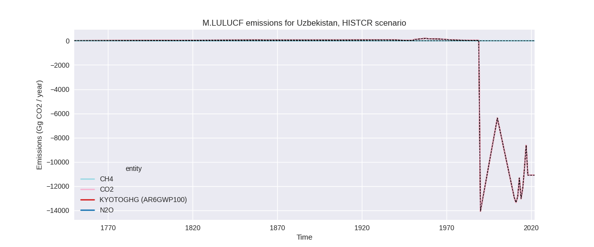
The following figures show the aggregate national total emissions excluding LULUCF AR6GWP100 for the third party priority scenario. The dotted linesshow the v2.5_final data.
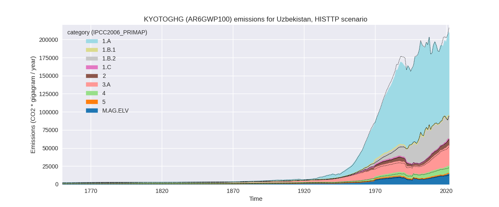
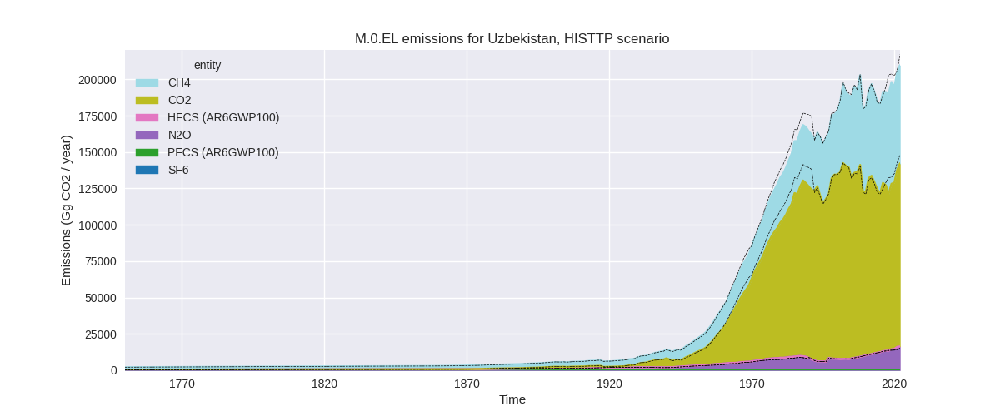
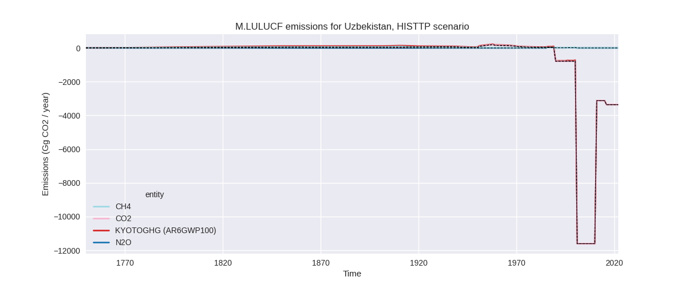
Overview over changes
In the country reported priority scenario we have the following changes for aggregate Kyoto GHG and national total emissions excluding LULUCF (M.0.EL):
- Emissions in 2022 have changed by 2.4%% (4976.58 Gg CO2 / year)
- Emissions in 1990-2022 have changed by 0.6%% (1266.92 Gg CO2 / year)
In the third party priority scenario we have the following changes for aggregate Kyoto GHG and national total emissions excluding LULUCF (M.0.EL):
- Emissions in 2022 have changed by -3.4%% (-7278.30 Gg CO2 / year)
- Emissions in 1990-2022 have changed by -1.3%% (-2451.22 Gg CO2 / year)
Most important changes per scenario and time frame
In the country reported priority scenario the following sector-gas combinations have the highest absolute impact on national total KyotoGHG (AR6GWP100) emissions in 2022 (top 5):
- 1: 1.B.2, CH4 with 7945.90 Gg CO2 / year (17.3%)
- 2: 1.A, CO2 with -4389.62 Gg CO2 / year (-4.1%)
- 3: M.AG.ELV, CO2 with 1188.59 Gg CO2 / year (153.5%)
- 4: M.AG.ELV, N2O with 1087.13 Gg CO2 / year (10.0%)
- 5: 3.A, CH4 with -969.35 Gg CO2 / year (-3.6%)
In the country reported priority scenario the following sector-gas combinations have the highest absolute impact on national total KyotoGHG (AR6GWP100) emissions in 1990-2022 (top 5):
- 1: M.AG.ELV, CO2 with 1002.80 Gg CO2 / year (201.3%)
- 2: 1.A, CO2 with 422.12 Gg CO2 / year (0.4%)
- 3: 1.B.2, CH4 with -204.35 Gg CO2 / year (-0.3%)
- 4: M.AG.ELV, N2O with 103.66 Gg CO2 / year (1.5%)
- 5: 3.A, CH4 with -38.89 Gg CO2 / year (-0.3%)
In the third party priority scenario the following sector-gas combinations have the highest absolute impact on national total KyotoGHG (AR6GWP100) emissions in 2022 (top 5):
- 1: 1.A, CO2 with -7350.97 Gg CO2 / year (-6.1%)
- 2: M.AG.ELV, CO2 with 1188.59 Gg CO2 / year (153.5%)
- 3: M.AG.ELV, N2O with 1186.58 Gg CO2 / year (10.4%)
- 4: 3.A, CH4 with -1081.46 Gg CO2 / year (-4.0%)
- 5: 2, CO2 with -742.56 Gg CO2 / year (-7.5%)
In the third party priority scenario the following sector-gas combinations have the highest absolute impact on national total KyotoGHG (AR6GWP100) emissions in 1990-2022 (top 5):
- 1: 1.A, CO2 with -1897.86 Gg CO2 / year (-1.7%)
- 2: 1.B.2, CH4 with -1076.99 Gg CO2 / year (-3.5%)
- 3: M.AG.ELV, CO2 with 1002.80 Gg CO2 / year (201.3%)
- 4: 2, CO2 with -527.87 Gg CO2 / year (-8.4%)
- 5: M.AG.ELV, N2O with 85.29 Gg CO2 / year (1.1%)
Notes on data changes
No country specific notes present for this changelog.
Changes by sector and gas
For each scenario and time frame the changes are displayed for all individual sectors and all individual gases. In the sector plot we use aggregate Kyoto GHGs in AR6GWP100. In the gas plot we usenational total emissions without LULUCF. ## country reported scenario
2022
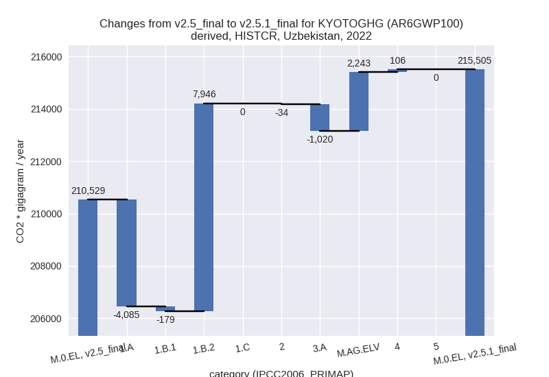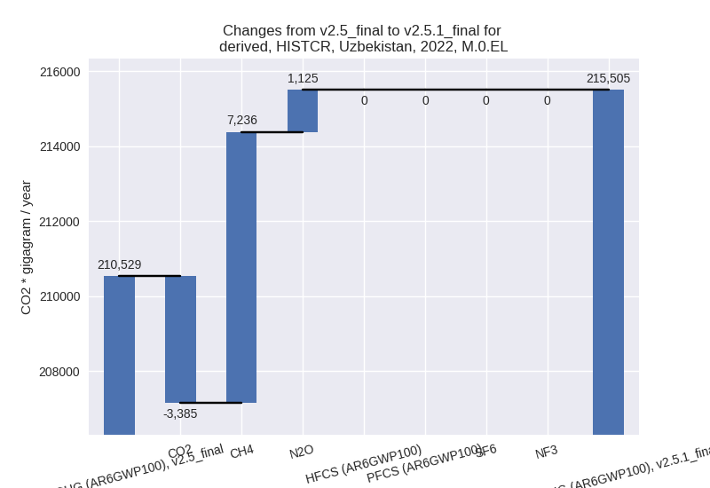
1990-2022
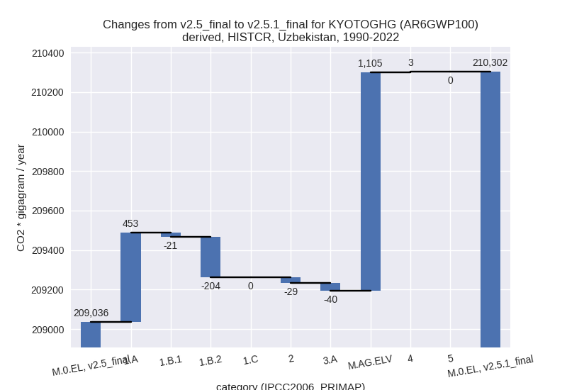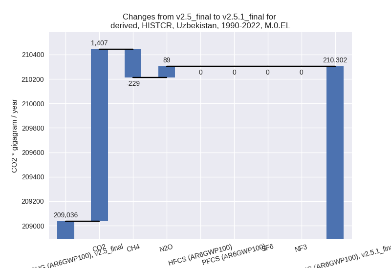
third party scenario
2022
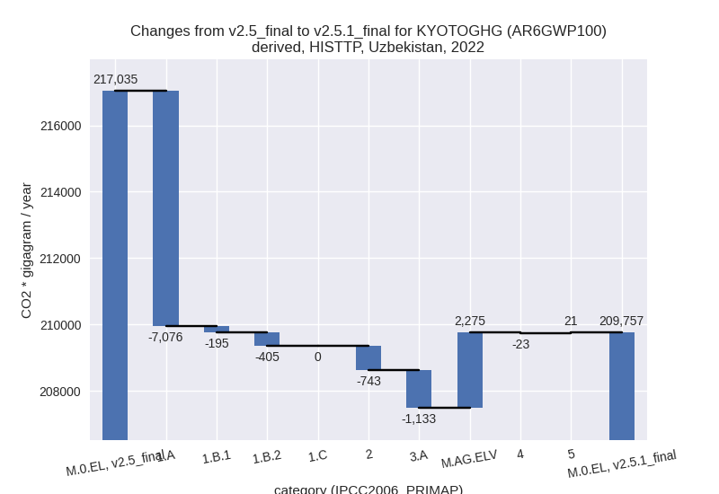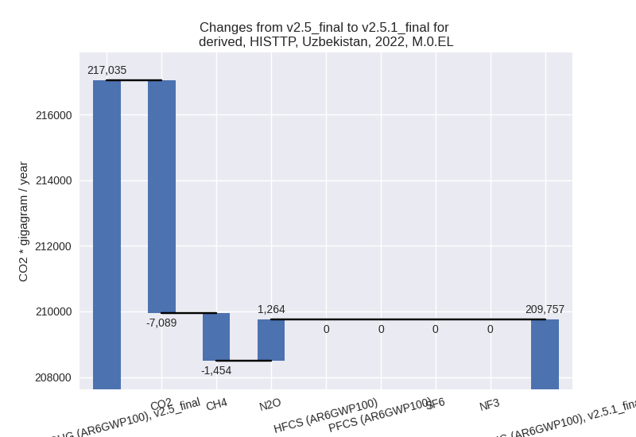
1990-2022
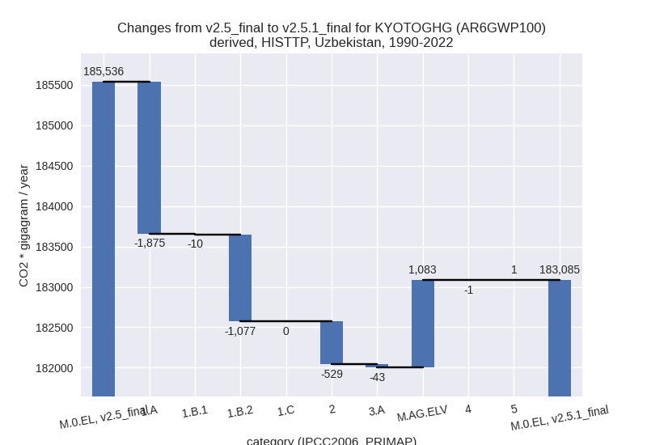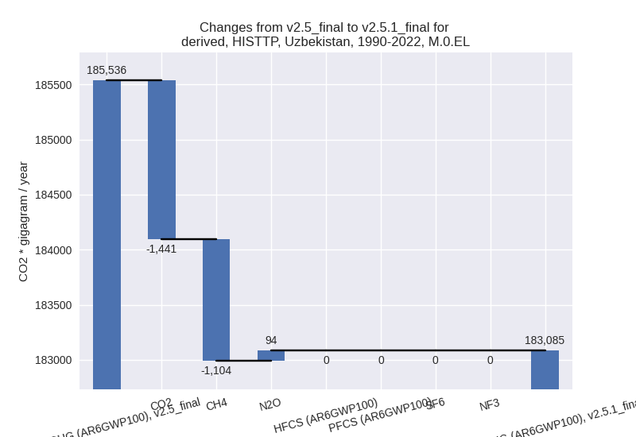
Detailed changes for the scenarios:
country reported scenario (HISTCR):
Most important changes per time frame
For 2022 the following sector-gas combinations have the highest absolute impact on national total KyotoGHG (AR6GWP100) emissions in 2022 (top 5):
- 1: 1.B.2, CH4 with 7945.90 Gg CO2 / year (17.3%)
- 2: 1.A, CO2 with -4389.62 Gg CO2 / year (-4.1%)
- 3: M.AG.ELV, CO2 with 1188.59 Gg CO2 / year (153.5%)
- 4: M.AG.ELV, N2O with 1087.13 Gg CO2 / year (10.0%)
- 5: 3.A, CH4 with -969.35 Gg CO2 / year (-3.6%)
For 1990-2022 the following sector-gas combinations have the highest absolute impact on national total KyotoGHG (AR6GWP100) emissions in 1990-2022 (top 5):
- 1: M.AG.ELV, CO2 with 1002.80 Gg CO2 / year (201.3%)
- 2: 1.A, CO2 with 422.12 Gg CO2 / year (0.4%)
- 3: 1.B.2, CH4 with -204.35 Gg CO2 / year (-0.3%)
- 4: M.AG.ELV, N2O with 103.66 Gg CO2 / year (1.5%)
- 5: 3.A, CH4 with -38.89 Gg CO2 / year (-0.3%)
Changes in the main sectors for aggregate KyotoGHG (AR6GWP100) are
- 1: Total sectoral emissions in 2022 are 159302.76
Gg CO2 / year which is 73.9% of M.0.EL emissions. 2022 Emissions have
changed by 2.4% (3682.36 Gg CO2 /
year). 1990-2022 Emissions have changed by 0.1% (227.57 Gg CO2 / year). For 2022 the
changes per gas
are:
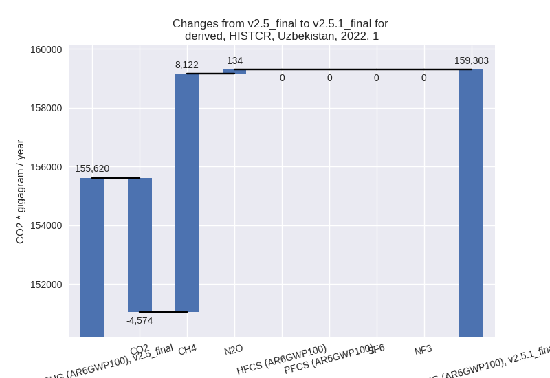
The changes come from the following subsectors:- 1.A: Total sectoral emissions in 2022 are 104972.20
Gg CO2 / year which is 65.9% of category 1 emissions. 2022 Emissions
have changed by -3.7% (-4084.85 Gg
CO2 / year). 1990-2022 Emissions have changed by 0.4% (453.00 Gg CO2 / year). For 2022 the
changes per gas
are:
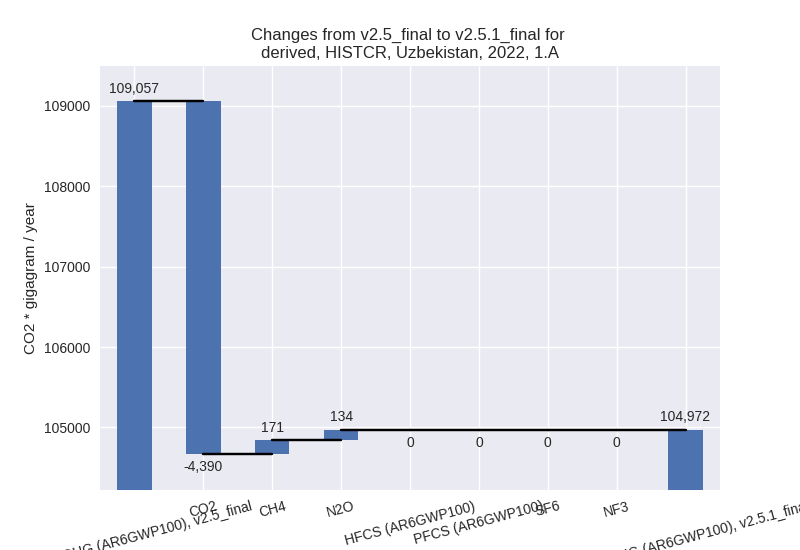
There is no subsector information available in PRIMAP-hist. - 1.B.1: Total sectoral emissions in 2022 are 225.30
Gg CO2 / year which is 0.1% of category 1 emissions. 2022 Emissions have
changed by -44.2% (-178.80 Gg CO2 /
year). 1990-2022 Emissions have changed by -6.9% (-21.08 Gg CO2 / year). For 2022 the
changes per gas
are:
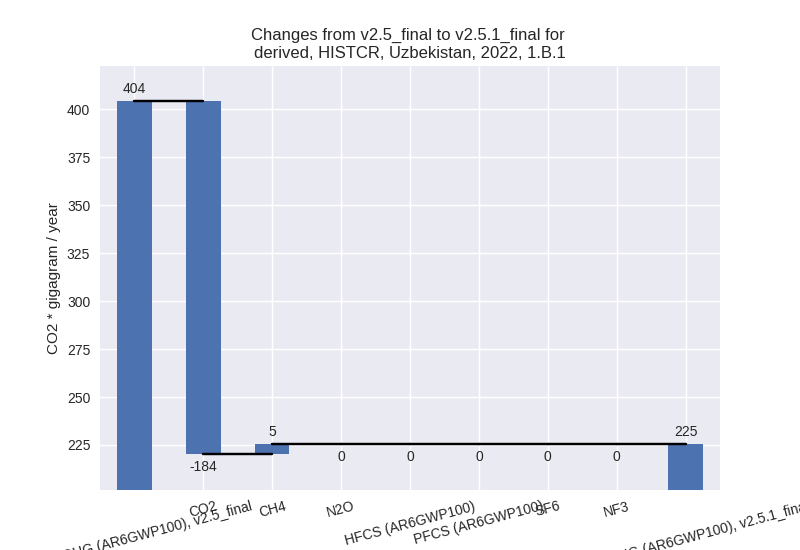
For 1990-2022 the changes per gas are:
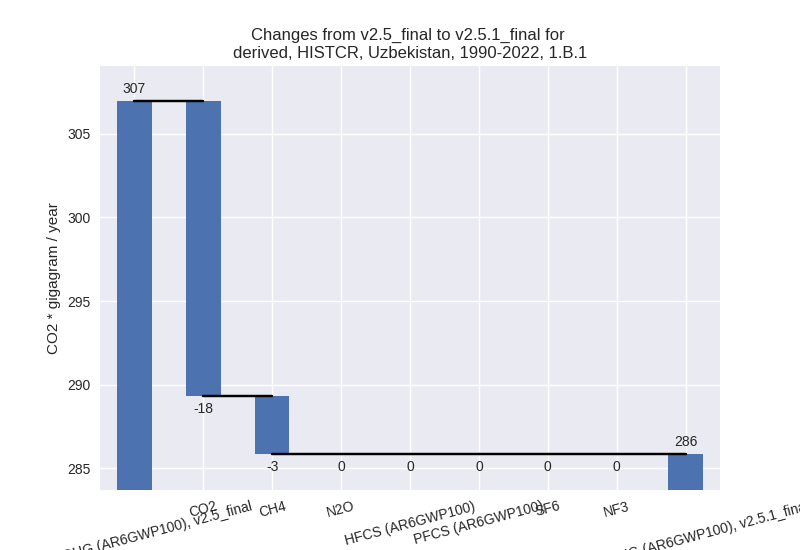
There is no subsector information available in PRIMAP-hist. - 1.B.2: Total sectoral emissions in 2022 are
54105.27 Gg CO2 / year which is 34.0% of category 1 emissions. 2022
Emissions have changed by 17.2%
(7946.01 Gg CO2 / year). 1990-2022 Emissions have changed by -0.3% (-204.34 Gg CO2 / year). For 2022
the changes per gas
are:
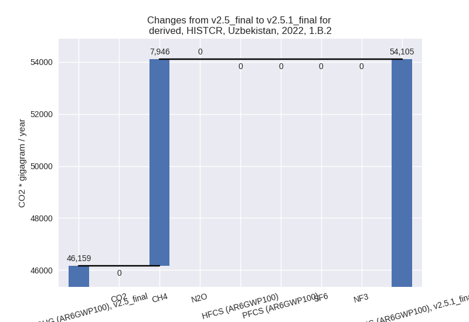
There is no subsector information available in PRIMAP-hist.
- 1.A: Total sectoral emissions in 2022 are 104972.20
Gg CO2 / year which is 65.9% of category 1 emissions. 2022 Emissions
have changed by -3.7% (-4084.85 Gg
CO2 / year). 1990-2022 Emissions have changed by 0.4% (453.00 Gg CO2 / year). For 2022 the
changes per gas
are:
- 2: Total sectoral emissions in 2022 are 10855.73 Gg CO2 / year which is 5.0% of M.0.EL emissions. 2022 Emissions have changed by -0.3% (-34.05 Gg CO2 / year). 1990-2022 Emissions have changed by -0.4% (-28.70 Gg CO2 / year).
- M.AG: Total sectoral emissions in 2022 are 42036.10
Gg CO2 / year which is 19.5% of M.0.EL emissions. 2022 Emissions have
changed by 3.0% (1222.70 Gg CO2 /
year). 1990-2022 Emissions have changed by 4.4% (1064.85 Gg CO2 / year). For 2022 the
changes per gas
are:
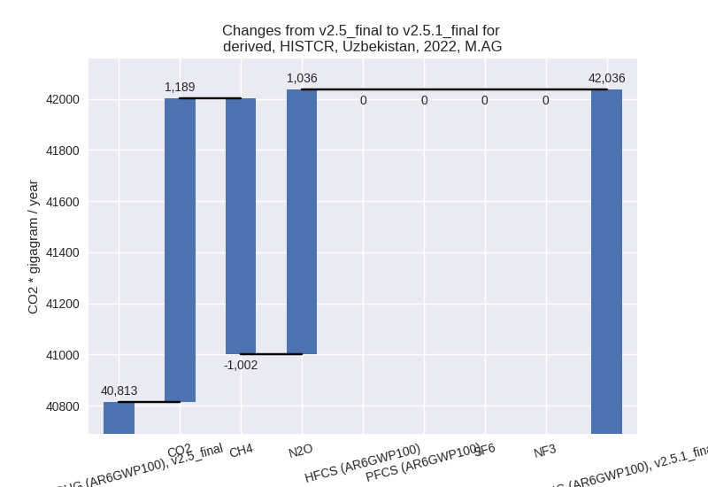
For 1990-2022 the changes per gas are:
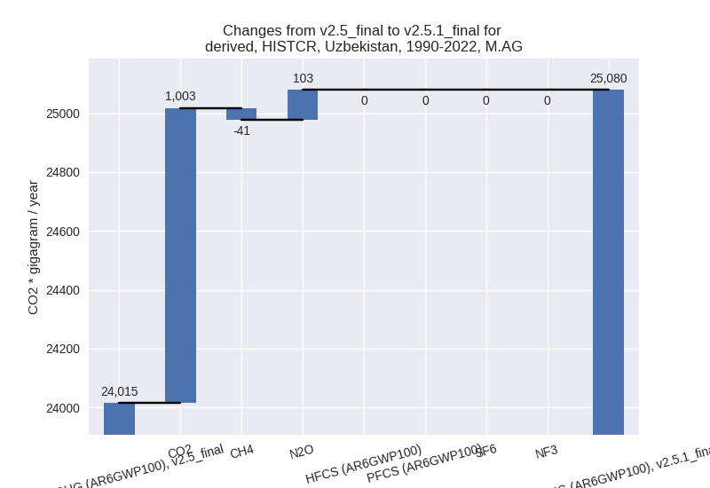
The changes come from the following subsectors:- 3.A: Total sectoral emissions in 2022 are 28033.23
Gg CO2 / year which is 66.7% of category M.AG emissions. 2022 Emissions
have changed by -3.5% (-1020.18 Gg
CO2 / year). 1990-2022 Emissions have changed by -0.2% (-39.93 Gg CO2 / year). For 2022 the
changes per gas
are:
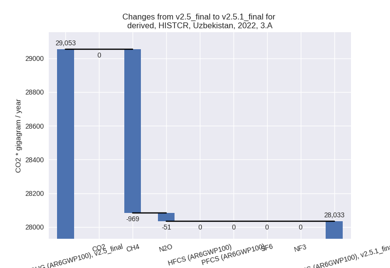
There is no subsector information available in PRIMAP-hist. - M.AG.ELV: Total sectoral emissions in 2022 are
14002.88 Gg CO2 / year which is 33.3% of category M.AG emissions. 2022
Emissions have changed by 19.1%
(2242.88 Gg CO2 / year). 1990-2022 Emissions have changed by 14.5% (1104.78 Gg CO2 / year). For 2022
the changes per gas
are:

For 1990-2022 the changes per gas are:
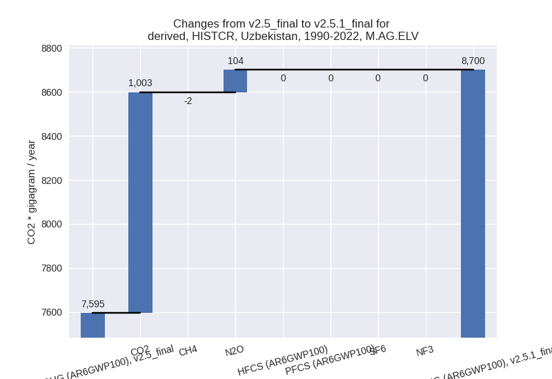
There is no subsector information available in PRIMAP-hist.
- 3.A: Total sectoral emissions in 2022 are 28033.23
Gg CO2 / year which is 66.7% of category M.AG emissions. 2022 Emissions
have changed by -3.5% (-1020.18 Gg
CO2 / year). 1990-2022 Emissions have changed by -0.2% (-39.93 Gg CO2 / year). For 2022 the
changes per gas
are:
- 4: Total sectoral emissions in 2022 are 3310.88 Gg
CO2 / year which is 1.5% of M.0.EL emissions. 2022 Emissions have
changed by 3.3% (105.57 Gg CO2 /
year). 1990-2022 Emissions have changed by 0.1% (3.20 Gg CO2 / year). For 2022 the
changes per gas
are:
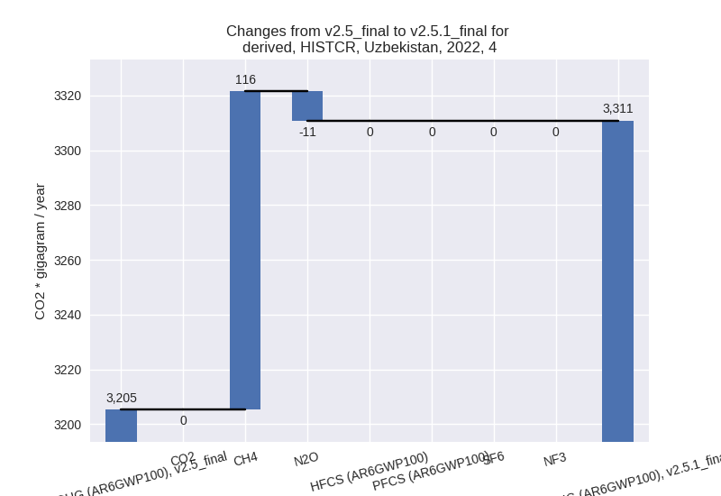 - 5: No data
third party scenario (HISTTP):
Most important changes per time frame
For 2022 the following sector-gas combinations have the highest absolute impact on national total KyotoGHG (AR6GWP100) emissions in 2022 (top 5):
- 1: 1.A, CO2 with -7350.97 Gg CO2 / year (-6.1%)
- 2: M.AG.ELV, CO2 with 1188.59 Gg CO2 / year (153.5%)
- 3: M.AG.ELV, N2O with 1186.58 Gg CO2 / year (10.4%)
- 4: 3.A, CH4 with -1081.46 Gg CO2 / year (-4.0%)
- 5: 2, CO2 with -742.56 Gg CO2 / year (-7.5%)
For 1990-2022 the following sector-gas combinations have the highest absolute impact on national total KyotoGHG (AR6GWP100) emissions in 1990-2022 (top 5):
- 1: 1.A, CO2 with -1897.86 Gg CO2 / year (-1.7%)
- 2: 1.B.2, CH4 with -1076.99 Gg CO2 / year (-3.5%)
- 3: M.AG.ELV, CO2 with 1002.80 Gg CO2 / year (201.3%)
- 4: 2, CO2 with -527.87 Gg CO2 / year (-8.4%)
- 5: M.AG.ELV, N2O with 85.29 Gg CO2 / year (1.1%)
Changes in the main sectors for aggregate KyotoGHG (AR6GWP100) are
- 1: Total sectoral emissions in 2022 are 146907.40
Gg CO2 / year which is 70.0% of M.0.EL emissions. 2022 Emissions have
changed by -5.0% (-7675.87 Gg CO2 /
year). 1990-2022 Emissions have changed by -2.0% (-2961.88 Gg CO2 / year). For 2022
the changes per gas
are:
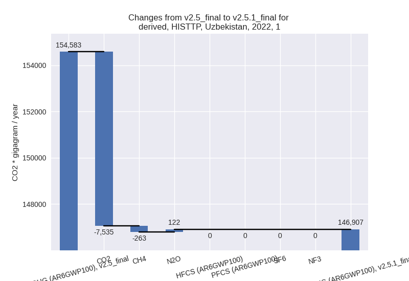
For 1990-2022 the changes per gas are:
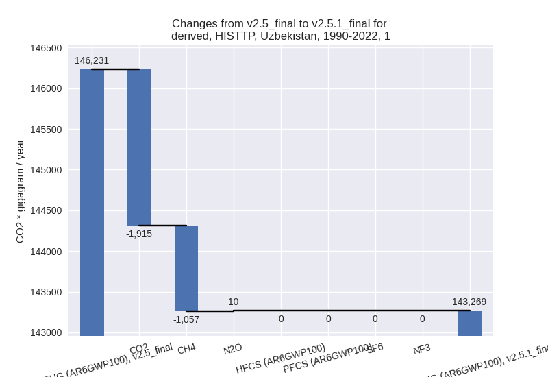
The changes come from the following subsectors:- 1.A: Total sectoral emissions in 2022 are 114823.42
Gg CO2 / year which is 78.2% of category 1 emissions. 2022 Emissions
have changed by -5.8% (-7076.25 Gg
CO2 / year). 1990-2022 Emissions have changed by -1.7% (-1875.16 Gg CO2 / year). For 2022
the changes per gas
are:
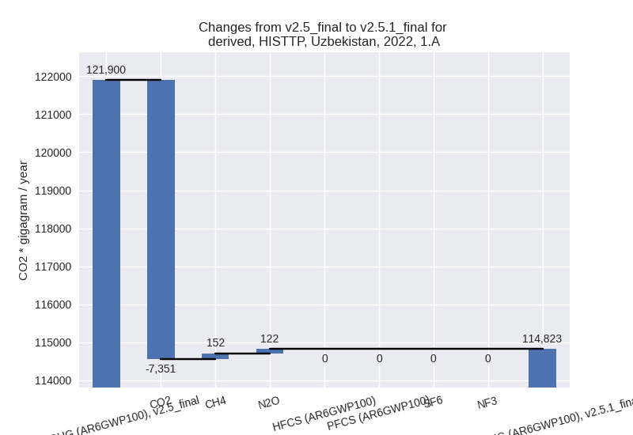
There is no subsector information available in PRIMAP-hist. - 1.B.1: Total sectoral emissions in 2022 are 242.42
Gg CO2 / year which is 0.2% of category 1 emissions. 2022 Emissions have
changed by -44.6% (-195.01 Gg CO2 /
year). 1990-2022 Emissions have changed by -5.3% (-9.72 Gg CO2 / year). For 2022 the
changes per gas
are:

For 1990-2022 the changes per gas are:
There is no subsector information available in PRIMAP-hist. - 1.B.2: Total sectoral emissions in 2022 are
31841.56 Gg CO2 / year which is 21.7% of category 1 emissions. 2022
Emissions have changed by -1.3%
(-404.61 Gg CO2 / year). 1990-2022 Emissions have changed by -3.3% (-1077.00 Gg CO2 / year). For
1990-2022 the changes per gas
are:
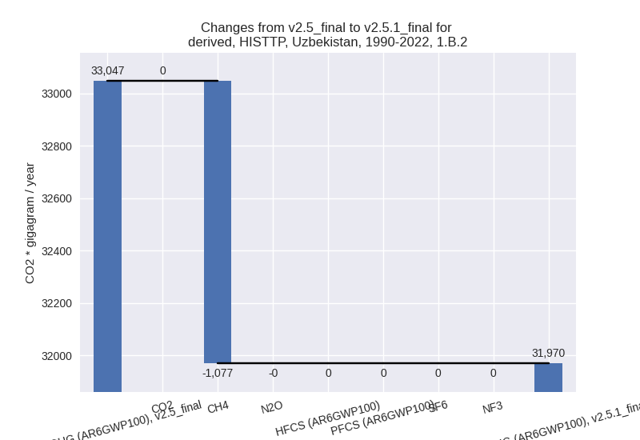
There is no subsector information available in PRIMAP-hist.
- 1.A: Total sectoral emissions in 2022 are 114823.42
Gg CO2 / year which is 78.2% of category 1 emissions. 2022 Emissions
have changed by -5.8% (-7076.25 Gg
CO2 / year). 1990-2022 Emissions have changed by -1.7% (-1875.16 Gg CO2 / year). For 2022
the changes per gas
are:
- 2: Total sectoral emissions in 2022 are 9489.99 Gg
CO2 / year which is 4.5% of M.0.EL emissions. 2022 Emissions have
changed by -7.3% (-743.22 Gg CO2 /
year). 1990-2022 Emissions have changed by -8.2% (-528.96 Gg CO2 / year). For 2022
the changes per gas
are:
For 1990-2022 the changes per gas are:
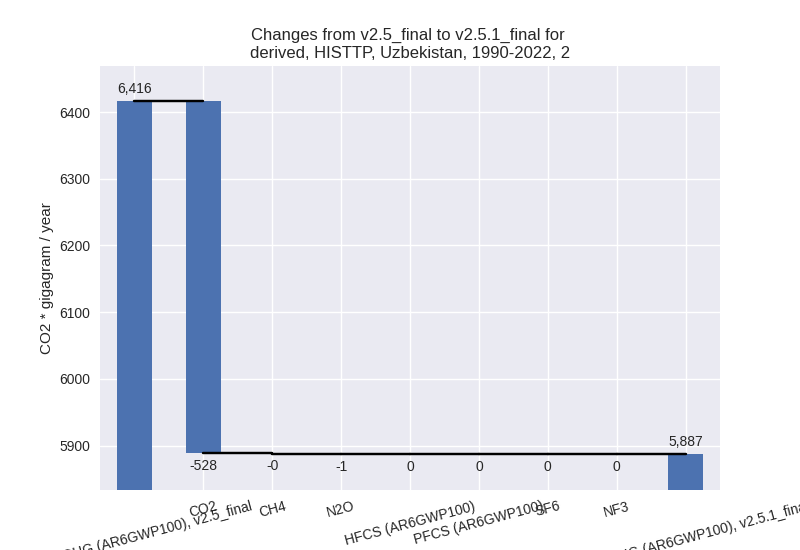 - M.AG: Total sectoral emissions in 2022 are 43120.79
Gg CO2 / year which is 20.6% of M.0.EL emissions. 2022 Emissions have
changed by 2.7% (1142.71 Gg CO2 /
year). 1990-2022 Emissions have changed by 4.1% (1039.68 Gg CO2 / year). For 2022 the
changes per gas
are:
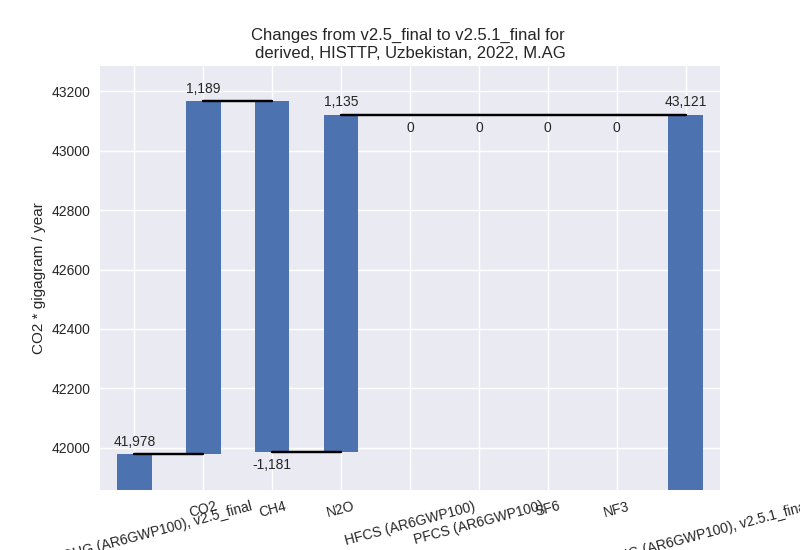
For 1990-2022 the changes per gas are:
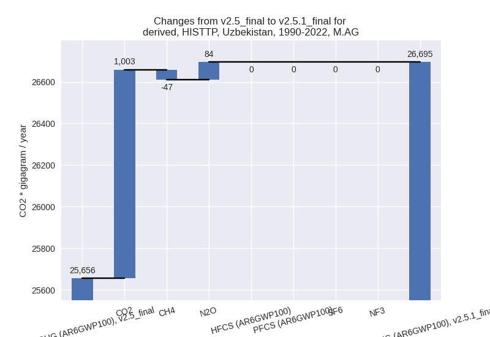
The changes come from the following subsectors:- 3.A: Total sectoral emissions in 2022 are 28207.45
Gg CO2 / year which is 65.4% of category M.AG emissions. 2022 Emissions
have changed by -3.9% (-1132.54 Gg
CO2 / year). 1990-2022 Emissions have changed by -0.3% (-43.28 Gg CO2 / year). For 2022 the
changes per gas
are:
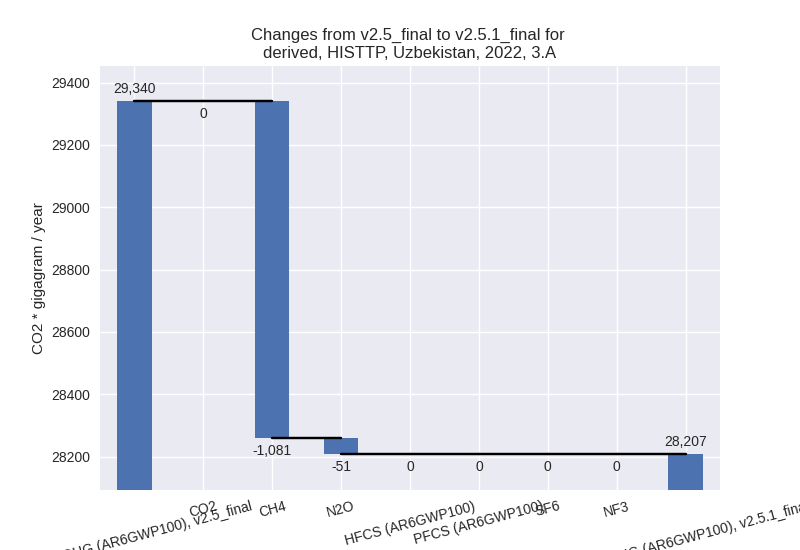
There is no subsector information available in PRIMAP-hist. - M.AG.ELV: Total sectoral emissions in 2022 are
14913.34 Gg CO2 / year which is 34.6% of category M.AG emissions. 2022
Emissions have changed by 18.0%
(2275.25 Gg CO2 / year). 1990-2022 Emissions have changed by 12.6% (1082.96 Gg CO2 / year). For 2022
the changes per gas
are:
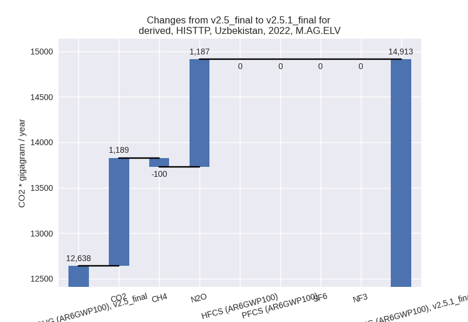
For 1990-2022 the changes per gas are:
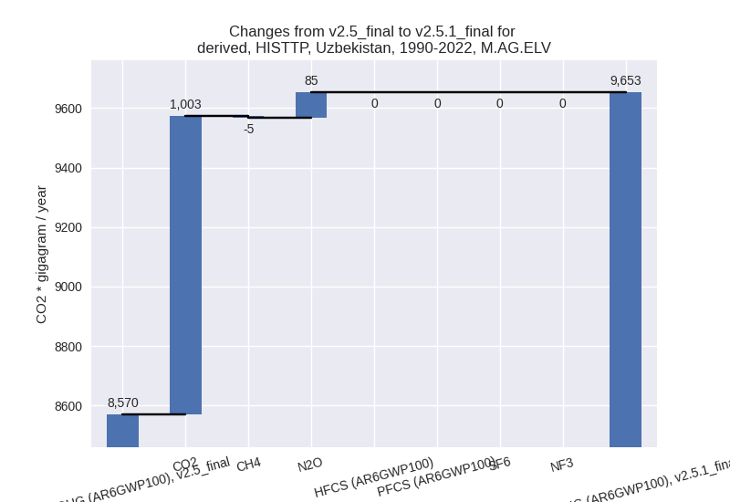
There is no subsector information available in PRIMAP-hist.
- 3.A: Total sectoral emissions in 2022 are 28207.45
Gg CO2 / year which is 65.4% of category M.AG emissions. 2022 Emissions
have changed by -3.9% (-1132.54 Gg
CO2 / year). 1990-2022 Emissions have changed by -0.3% (-43.28 Gg CO2 / year). For 2022 the
changes per gas
are:
- 4: Total sectoral emissions in 2022 are 10054.88 Gg CO2 / year which is 4.8% of M.0.EL emissions. 2022 Emissions have changed by -0.2% (-22.58 Gg CO2 / year). 1990-2022 Emissions have changed by -0.0% (-0.68 Gg CO2 / year).
- 5: Total sectoral emissions in 2022 are 183.46 Gg
CO2 / year which is 0.1% of M.0.EL emissions. 2022 Emissions have
changed by 12.7% (20.67 Gg CO2 /
year). 1990-2022 Emissions have changed by 0.3% (0.63 Gg CO2 / year). For 2022 the
changes per gas
are:
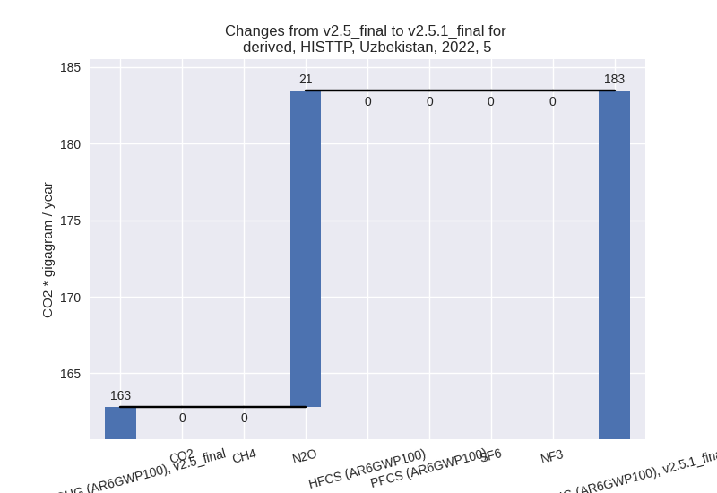